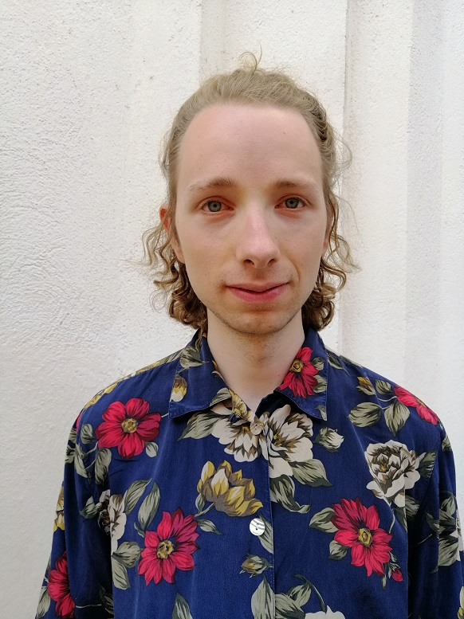

English
/
Suomi
Sellisti Vertti Viitasaari
Laitathan Javascriptin päälle saadaksesi eniten irti vierailustasi! / Please enable Javascript to get most out of your visit!
CV
📧
viitasaari.vertti@gmail.com
/ ☎
050 345 3950
Videot